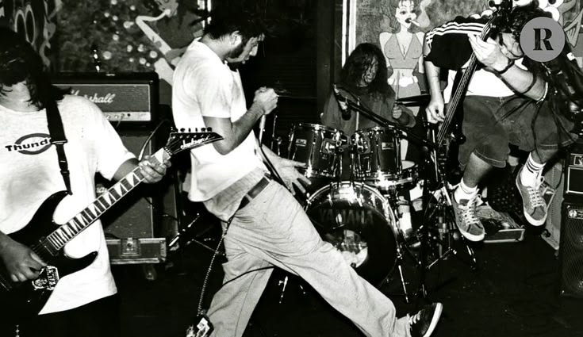

BACK-END
É minha principal direção. Quero entender cada vez melhor lógica, servidores, APIs e bancos de dados.
01 / PERSONAL PORTFOLIO
EU SOU NATAN
Estudante de programação, atualmente construindo minha base em JavaScript e Python e aprofundando meu foco em desenvolvimento back-end.
02 / CURRENT FOCUS
Meu objetivo atual é aprofundar meus conhecimentos e desenvolver projetos cada vez mais completos.
É minha principal direção. Quero entender cada vez melhor lógica, servidores, APIs e bancos de dados.
Estudando lógica, funções, eventos, manipulação do DOM e interação entre código e interface.
Uma das linguagens com as quais tenho contato e que quero levar para projetos maiores no futuro.
HTML e CSS ainda são uma área em desenvolvimento para mim, e este portfólio faz parte dessa prática.
03 / ABOUT ME
Sem inventar experiência ou números: aqui a ideia é mostrar claramente onde estou e para onde quero ir.
Meu nome é Natan Ferreira Moraes Guimarães, tenho 19 anos e sou estudante de programação.
Meu principal interesse está no desenvolvimento back-end, área em que tenho mais afinidade para aprender e onde quero me aprofundar profissionalmente.
Tenho contato com HTML, CSS, JavaScript e Python. Front-end ainda é uma parte que estou desenvolvendo, então procuro usar cada projeto para melhorar essa base.
Meu objetivo é crescer no ramo de TI construindo projetos reais, aprendendo novas ferramentas e entendendo cada vez melhor como o código funciona por trás das aplicações.
04 / SKILLS
Não uso porcentagens artificiais. Em vez disso, separo o que estudo, o que pratico e qual é minha direção.
Contato atual com as principais linguagens e tecnologias usadas nos meus exercícios e projetos.
Prática de estrutura, interação, responsividade e publicação de projetos.
Direção que quero aprofundar nos próximos projetos e estudos.
Características que fazem parte da forma como observo, converso e trabalho com outras pessoas.
05 / HOW I WORK
Algumas características que fazem parte da minha forma de trabalhar e aprender.
Presto muita atenção ao que está sendo explicado e aos detalhes de um problema.
Consigo colaborar com outras pessoas e contribuir para o andamento da equipe.
Uma das minhas principais características é saber ouvir bem antes de responder ou tomar uma decisão.
Consigo manter diálogos prolongados e desenvolver conversas de forma clara.
Em determinadas situações, consigo buscar abordagens diferentes para encontrar uma solução.
Gosto de observar e entender um problema antes de escolher como agir.
06 / SELECTED PROJECTS
Poucos projetos, mas reais. Conforme eu construir mais, esta seção cresce junto.
Site editorial inspirado na cultura skate, música e estética underground dos anos 90/2000.
VIEW ON GITHUB ↗
Projeto de prática em JavaScript envolvendo interação, lógica, entrada de dados e manipulação da página.
VIEW ON GITHUB ↗07 / MY FOCUS
O que estou estudando hoje e algumas características que fazem parte da forma como penso, aprendo e trabalho.
01 / FOCO ATUAL
É a área em que tenho mais interesse e facilidade para aprender. Quero entender cada vez melhor a lógica que faz uma aplicação funcionar.
Mesmo com mais foco no back-end, continuo estudando HTML, CSS e JavaScript para compreender o desenvolvimento de ponta a ponta.
Quero avançar para APIs, bancos de dados e projetos maiores, conectando o que já venho aprendendo.
Algumas características aparecem tanto nos meus estudos quanto na forma como trabalho: muita atenção, boa comunicação, escuta, criatividade em determinadas situações e um perfil analítico.
Gosto de entender o problema antes de sair procurando uma solução e de ouvir as pessoas para compreender diferentes pontos de vista.
08 / CURRENTLY LEARNING
O portfólio também mostra o que ainda está em construção.
SE QUISER VER O QUE ESTOU CONSTRUINDO